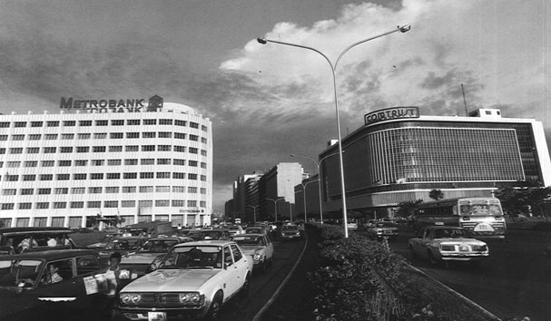
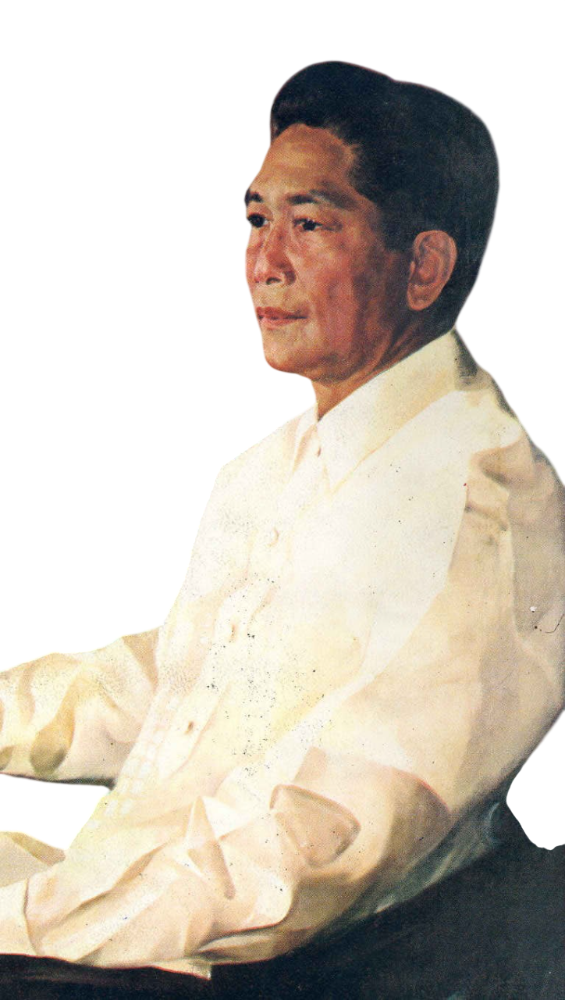
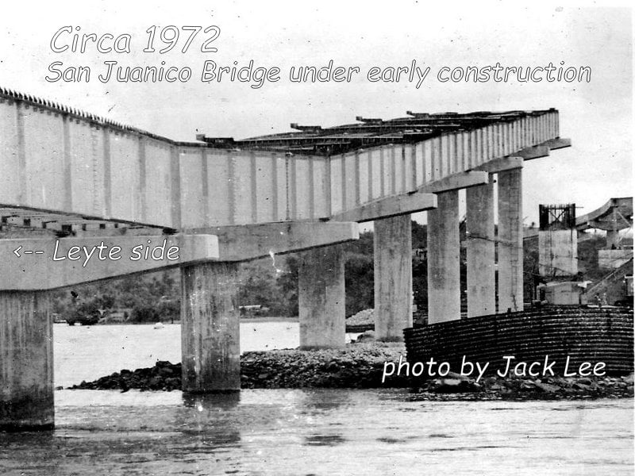
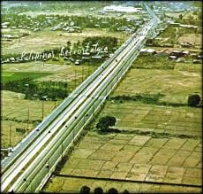
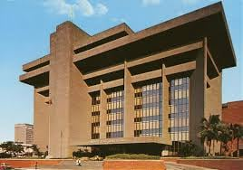
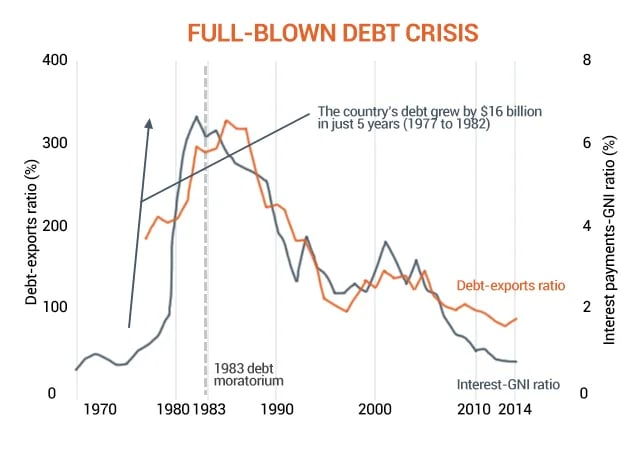
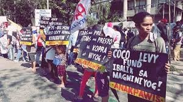
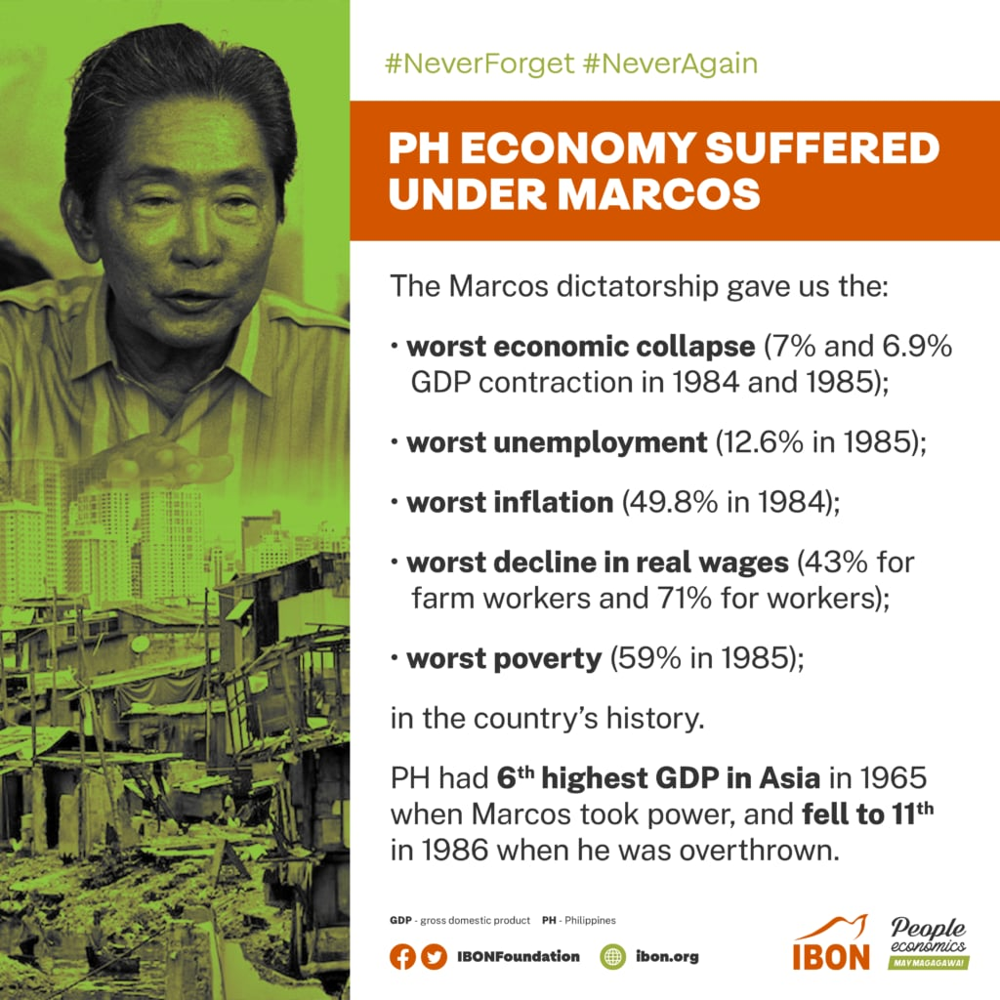

Economic Issues
An examination of the Philippine economy during the Marcos era — from large-scale infrastructure spending and debt-driven growth to crony capitalism, rising foreign debt, and the severe economic crisis of the early 1980s.

Economic policy under Marcos combined visible construction, foreign borrowing, and deep structural controversyInfrastructure and Early Economic Expansion

State-Led Development
During Ferdinand Marcos Sr.’s early presidency in the late 1960s and through the 1970s, the Philippine government invested heavily in infrastructure. Roads, bridges, irrigation systems, schools, hospitals, and energy projects were presented as the foundation of a modernizing economy. These public works were meant to improve transport, expand services, and stimulate economic development across the country.
The regime used infrastructure as both an economic strategy and a political symbol. Large-scale projects gave the impression of forward momentum and state capacity. To supporters, this was evidence of decisive national leadership. To critics, however, the impressive scale of construction often concealed deeper financial and political problems that would become much more visible in the years ahead.
Key Facts
- Major Marcos-era projects included the San Juanico Bridge, the North and South Luzon Expressways, irrigation works, hospitals, and other public infrastructure
- The Philippine Heart Center was formally created in 1975
- Economic growth in the 1970s was increasingly supported by foreign borrowing
- Foreign debt rose sharply during the Marcos years and became a central problem by the early 1980s
- Critics accused the regime of practicing crony capitalism by giving allies control over major industries
- The economy entered a severe crisis in the early 1980s, especially after the 1983 assassination of Benigno Aquino Jr.
- By the mid-1980s, the Philippines was burdened by heavy debt, inflation, unemployment, and recession
Major Projects and Economic Ambition
Among the most frequently cited projects of the Marcos period were the San Juanico Bridge linking Samar and Leyte, the expansion and development associated with the North and South Luzon Expressways, major irrigation systems, specialized medical institutions such as the Philippine Heart Center, and energy-related projects in different parts of the country. These undertakings were intended to strengthen connectivity, increase productivity, and present the Philippines as a nation moving toward industrial and technical modernization.



In the short term, this investment contributed to visible growth and helped reinforce the regime’s image as energetic and developmental. New roads and public facilities were concrete, highly visible achievements. But many of these gains rested on a fragile financial base. As the decade continued, the state increasingly turned to foreign borrowing to sustain spending and maintain momentum.
Foreign Loans and Rising Debt
A major economic issue of the Marcos era was the growing dependence on foreign loans. International banks, bilateral lenders, and multilateral institutions became increasingly important sources of funding for the Philippine state. Borrowing made it possible to keep financing infrastructure, public spending, and ambitious development plans even when domestic resources were insufficient.
At first, this borrowing helped sustain economic expansion. Over time, however, the debt burden grew rapidly. What appeared to be development success in the 1970s became much harder to manage once external conditions worsened, global interest costs rose, and investor confidence began to weaken. The country’s debt problem would eventually become one of the defining economic legacies of the regime.

The Marcos economy was not defined only by what it built, but also by how it paid for those projects — and by the heavy debt burden left behind when growth collapsed.
Crony Capitalism
Another major economic controversy during the Marcos regime was the rise of what critics called crony capitalism. Marcos was accused of giving monopolies, state protection, and economic advantages to close associates, relatives, and political allies. These individuals gained influence in important industries such as coconut, sugar, logging, banking, media, and telecommunications.

Critics argued that this system weakened fair competition, distorted markets, and encouraged corruption. Rather than creating a broad and healthy business environment, it tied economic opportunity more closely to political loyalty and access to Malacañang. Even when the economy showed growth on paper, many observers argued that its benefits were unevenly distributed and that ordinary workers and farmers saw limited long-term gain.
This concentration of wealth and influence also meant that political instability had a direct economic cost. When confidence in the regime began to falter, so did confidence in the system that had been built around it.
The Crisis of the Early 1980s
By the early 1980s, the Philippine economy entered a severe crisis. Several forces came together at once: rising foreign debt, declining world commodity prices, weaknesses in the domestic economy, and growing political instability. The situation worsened dramatically after the assassination of Benigno Aquino Jr. in 1983, which damaged investor confidence and intensified both political and economic uncertainty.
Between 1984 and 1985, the country experienced one of the worst recessions in its modern history. Poverty increased, inflation rose sharply, unemployment worsened, and living conditions deteriorated for many Filipinos. What had once been presented as a model of strong state-led development now appeared deeply fragile, overextended, and burdened by debt.

Debt, Recession, and Economic Legacy
By the time Marcos left office in 1986, the Philippines was carrying a massive foreign debt burden. The country’s economic troubles could not be explained by a single factor alone. External shocks, world market conditions, authoritarian political rule, debt dependence, and corruption all played a role. The result was a sharp contrast between the monumental public works of the era and the financial distress that accompanied its collapse.
This is why the economic legacy of Marcos remains fiercely debated. Some point to roads, bridges, hospitals, and other visible projects as proof of developmental ambition. Others emphasize that many of these achievements came at enormous financial and social cost, especially once debt, cronyism, and economic crisis are taken into account. In historical memory, the Marcos economy is therefore remembered not simply as a period of construction, but as a period in which impressive state-led development became inseparable from debt, corruption, and crisis.
Economic Timeline
Infrastructure Push Begins
The Marcos administration expands public spending on roads, bridges, irrigation systems, schools, hospitals, and other large-scale development projects.
Debt-Financed Growth
Economic expansion continues, but the state becomes increasingly dependent on foreign borrowing to sustain infrastructure and development spending.
San Juanico Bridge Inaugurated
One of the most famous Marcos-era infrastructure projects opens, symbolizing the regime’s emphasis on large public works.
Philippine Heart Center Created
Specialized institutions are incorporated into the government’s modernization and public service agenda.
Crony Capitalism Deepens
Critics increasingly accuse the regime of concentrating economic power in the hands of loyal associates and protected monopolies.
Aquino Assassination and Confidence Collapse
The assassination of Benigno Aquino Jr. worsens political instability and accelerates the economy’s slide into crisis.
Severe Recession
The Philippines experiences one of its worst economic downturns, marked by shrinking output, inflation, unemployment, and worsening poverty.
End of the Marcos Regime
Marcos leaves office with the Philippine economy heavily indebted and under intense political and financial strain.